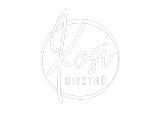

Bemutatkozás
Étlap&Itallap
Elérhetőség
Referenciáink
Elérhetőségeink
7500 Nagyatád, Kossuth u. 6.
Facebook
Instagram
(30) 966 9990
Nyitvatartás
Hétfő: Zárva
Kedd-Csütörtök: 11:00-22:00
Péntek-Szombat: 11:00-01:00
<a href="https://www.gps.ie/">gps devices</a>
 7500 Nagyatád, Kossuth u. 6.
7500 Nagyatád, Kossuth u. 6.

 (30) 966 9990
(30) 966 9990